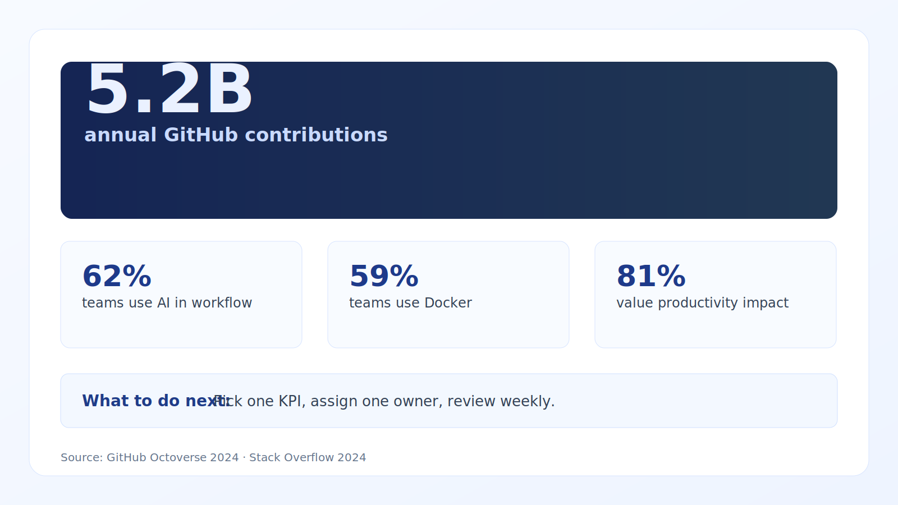

Most teams track too much and improve too little. Focus on cycle time, throughput, and escaped defects first.
Engineering metrics that avoid vanity traps
Updated with current benchmarks and practical implementation guidance for 10–100 person teams.
What is working now
- Balanced scorecards combining speed, stability, quality, and DevEx are outperforming single-metric dashboards.
- AI-assisted development raises output, but quality controls must keep pace.
- Teams are adopting rolling medians and trend windows to reduce sprint noise.
Evidence and benchmarks
- 59% of professional developers use Docker (Stack Overflow, 2024). Source
- 62% currently use AI tools in workflow (Stack Overflow, 2024). Source
- 72% favorable sentiment toward AI tools (Stack Overflow, 2024). Source
- 5.2B GitHub contributions recorded in 2024 (Octoverse). Source
Execution playbook (next 30 days)
- Track DORA-style flow + reliability metrics with one DevEx and one quality indicator.
- Separate platform-team and product-team baselines.
- Use 4–8 week rolling medians for decisions.

Data credibility note: Benchmarks are from reputable 2023–2026 sources where available; older baselines are included only when still industry-standard references.
Citations
Track
Cycle time, deployment frequency, incident recovery, escaped defects.
Avoid vanity
Story points closed and utilization targets as performance proxies.
Use weekly
Run one weekly review with actions assigned per metric movement.